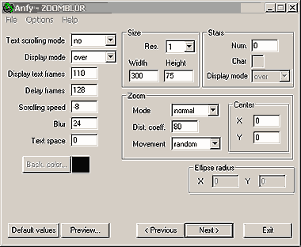

This applet displays a scrolling text, using coloured fonts. The
text can scroll horizontally, vertically or with a circular move.
You can add Blur or/and Zoom effect, and also stars using Anfy Font.
The coloured fonts are in AFT (Anfy Font) format.
You can create your own aft fonts using a paint program, otherwise
download freely the AFT fonts collection from here:
http://www.anfyteam.com/aft/
[For more technical
information about the available parameters, click here.]
Most parameters are self-explanatory and you can
always see brief description of each parameter by moving the mouse
pointer over the wizard.

Basic setting
Define the Resolution and the applet Width
and Height. Resolution is a zooming factor. For instance,
if resolution is 2, the applet size is doubled. The recommended
value for resolution is always 1. This produce the highest image
quality. Check Enable textscroll, if necessary. Select Background
color. With Display mode parameter you specify the text
display mode: The "normal" value will draw replacing colors.
The "over" will draw adding colors to what's on background
(mixing).
Text scrolling
There are 4 text scrolling modes: no, horizontal, vertical, ellipse.
If the scrolling mode is set to "no" or "ellipse",
the texts are displayed line by line, and the two timing parameters
are activated to calibrate the timing of lines swapping. Set the
number of frames (duration) to display a line of the text at Display
Text Frames. The value for Delay frames represents the waiting
time between lines to be shown. With Blur parameter you can
set the blur value [1, 255], which is the color component subtracted
for each level of blur to reach the black of the background. Lower
values gives soft and more propagated blurring, higher values gives
stronger decadence of color, fading to black sooner. With Text
Space parameter you specify the horizontal space between letters.
If the scrolling mode is ellipse, you need to set the Ellipse
Radius. X and Y represent horizontal and vertical
radius. If the scrolling is either horizontal or vertical, the text
is scrolled continuously, at a speed choosen at Scrolling Speed.
The Speed value can be either negative or positive in order to get
the different scrolling directions and speed. For left to right,
or up to down scrolling set speed > 0. For right to left, or
down to up scrolling set speed < 0. To calibrate speed, consider
speed="8" scrolls 1 pixel per frame. In the case of horizontal
scrolling, it's suggested to use negative values, in order to scroll
the text from right to left <-, even if it's possible to use
positive values to have a strange scroller. To specify negative
values use the "-" minus sign, for example: "-8".
Zooming
There are four zooming modes:
"normal" = zoom & blur
"noblur" = no blur effect
"nozoom" = no zoom effect
"no" = no zoom effect, no blur
Specify the value for Zoom Levels Distance Coefficient from
[1, 100]. Lower values make the blur levels more distant, higher
values make the blur levels nearer. Four zooming movement
options are available including "no", "circle",
"random". If the value is "no", you can specify
the center of zoom at Center XY. The center of applet is
equal to "0", and you can place positive or negative values
to change the center of zooming.
Stars
If you prefer, set the number of starts at Star Number box,
and define the string which represents the star at Character
box. This string will be draw with corresponding AnfyFont. It's
suggested to specify one only character, for example "*",
"-", or a character which in the selected font have a
nice image. However, you can also choose to use a string like "ANFY"
as star. Finally, Display mode controls the way to draw the
stars. Set it to "normal" to replace colors, or "over"
to add colors over the existing background (mising).
When you click the "Next >" button, you will
see the Text entering box, and Anfy Font Property. Enter your choice
of text directly, or import the text content from a file. Anfy Font
can be obtained from http://www.anfyteam.com/aft/.
Now, proceed to the expert
menu.
|